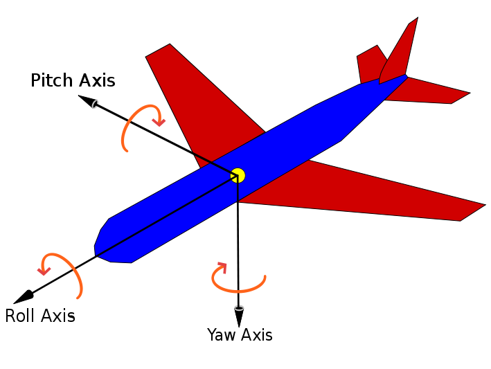

Perform a three steps filter on ADV data.
1) The first step use the despiking filter defined by Goring and Nikora (2002)
2) The second step uses the correlation, signal-to-noise and amplitude data from the sensor
3) Rotate the axes until the vertical and transversal velocities are 0. Only useful when the data corresponds to a straight channel with negligible secondary currents.
Contents
Function prototype
Input parameters:
VEL_IN corresponds to a structure containing the velocity time series in the form: VEL_IN.x VEL_IN.y VEL_IN.z
CORR corresponds to a structure containing the correlation time series in the form: CORR.x CORR.y CORR.z
SNR corresponds to a structure containing the signal to noise time series in the form: SNR.x SNR.y SNR.z
AMP corresponds to a structure containing the amplitude time series in the form: AMP.x AMP.y AMP.z
Output parameters:
VEL_OUT filtered veolities
function VEL_OUT = tt_clean_data(VEL_IN,CORR,SNR,AMP)
Parameters defined by the user
Rotation and thresholds for SNR and CORR
apply_rotation = 1; SNR_threshold = 15; CORR_threshold = 40;
Apply despiking
Call the function implementing Goring & Nikora algorithm
VEL_IN = tt_despiking(VEL_IN);
Apply quality data filters
Filters the signal using simple thresholds for correlation, amplitude and SNR
VEL_IN = tt_filter(VEL_IN, CORR, SNR, AMP, SNR_threshold, CORR_threshold);
Apply rotate
Rotate axes using the roll-yaw-pitch definiton, but neglecting roll (just Y, Z rotation)

if (apply_rotation == 1), VEL_IN = tt_rotate_axes(VEL_IN); end
Result
VEL_OUT = VEL_IN;
end